Add an item
- The form validates the input in the browser.
POST /api/itemsis sent with the JWT token.- The API validates the item and saves it in PostgreSQL.
- The response includes the expiry status and days left.
- The dashboard and item list refresh.
A full-stack web application that helps households use food before it expires. Users add each item with its expiry date and see a colour-coded dashboard of what to use first. They mark items as used or wasted, receive an optional 7:00 AM email before food expires and review a monthly summary of what was used and wasted.
View on GitHub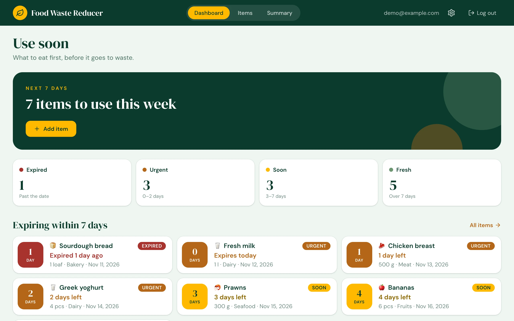
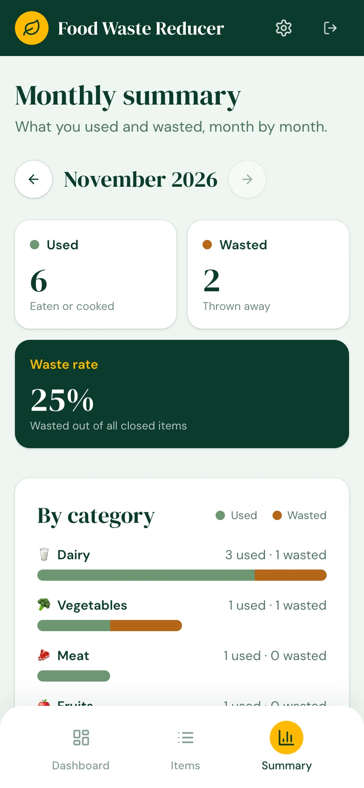
Food at home is often forgotten until it has already expired. Expiry dates are checked too late, and households have no clear record of how much food they throw away each month.
Food Waste Reducer keeps a list of the food in a home kitchen with its expiry date. It shows what to use first, sends an optional morning email before food expires and reports what was used or wasted each month.
The main screens of the web app. Every screen is designed for both desktop and mobile.
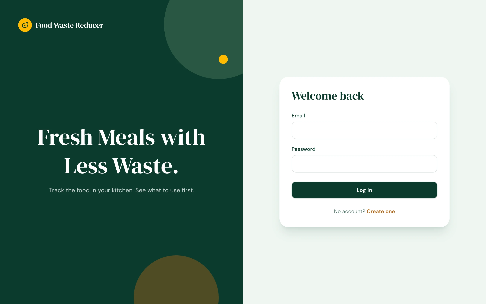
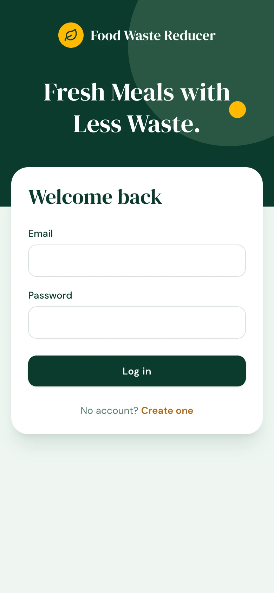
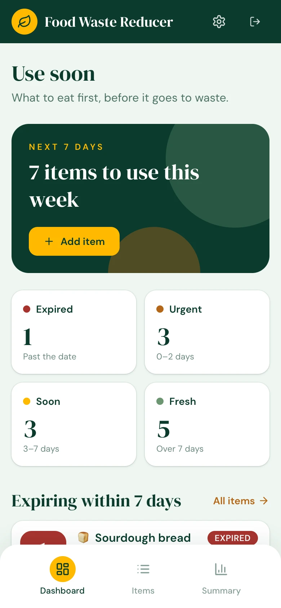
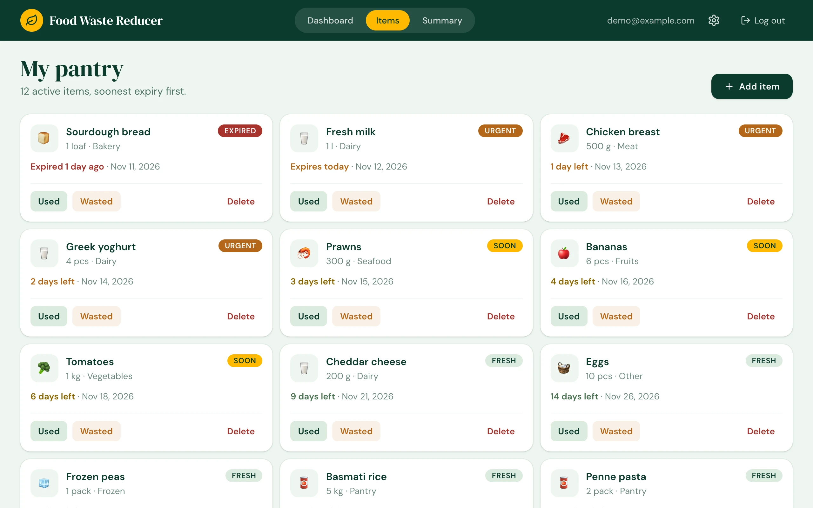
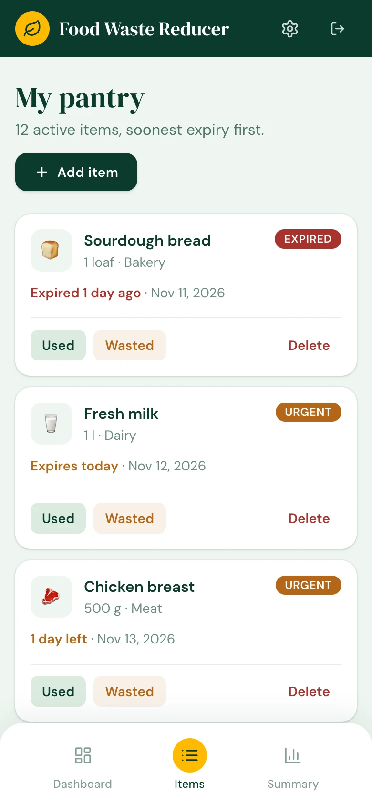
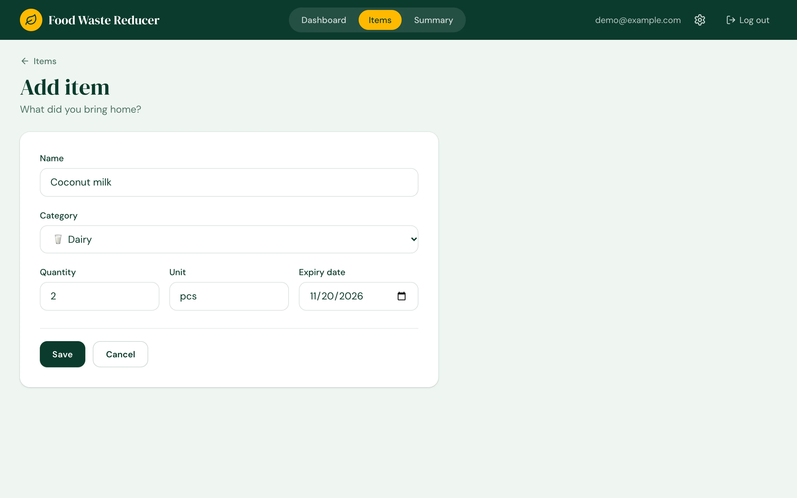
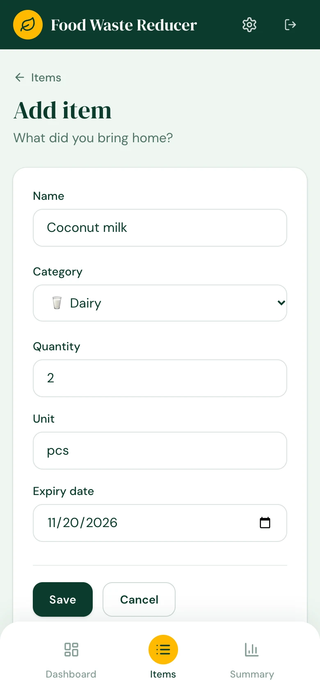
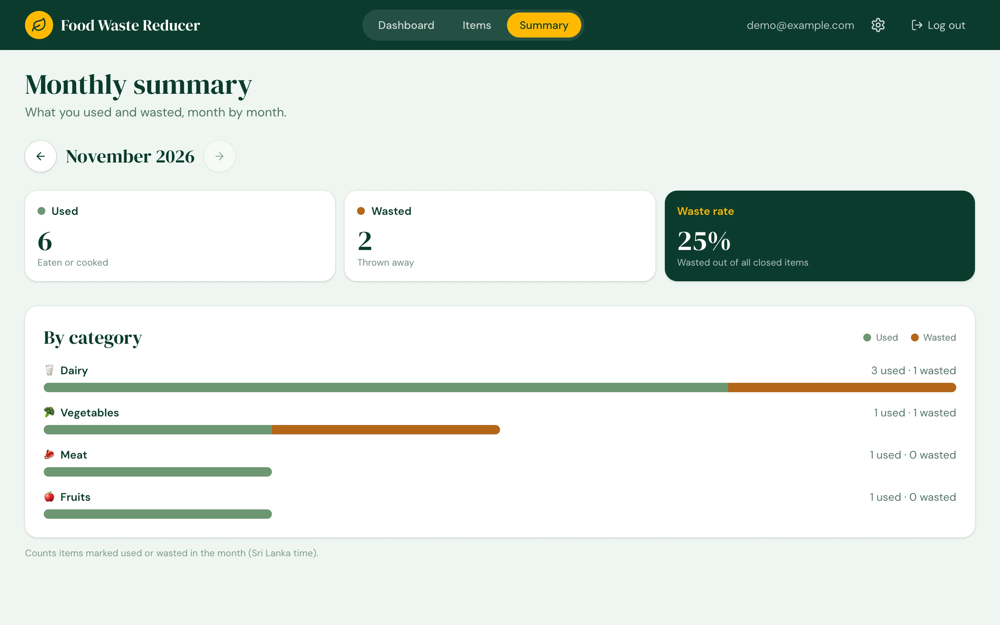
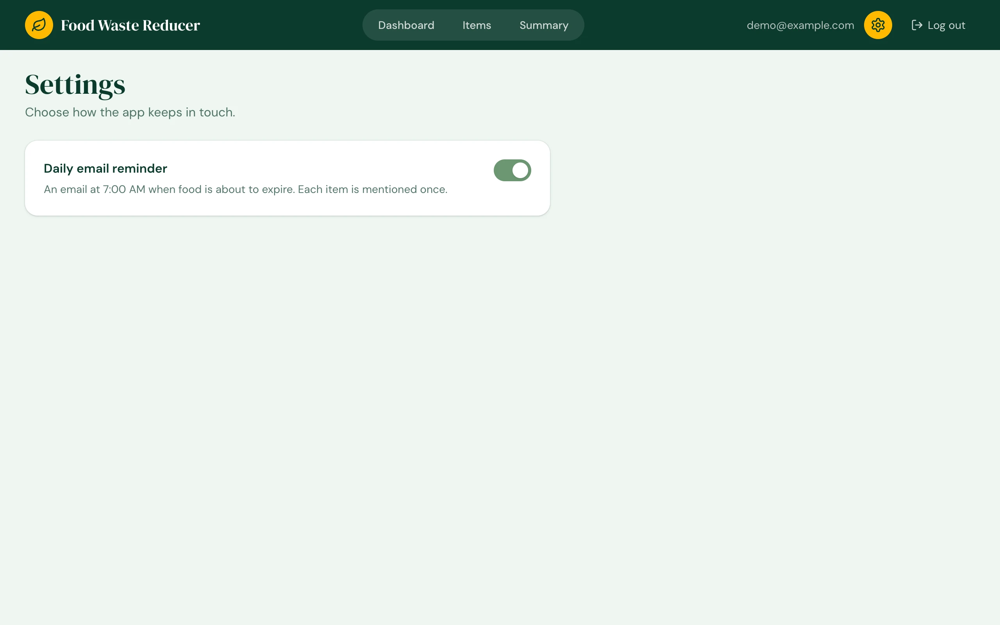
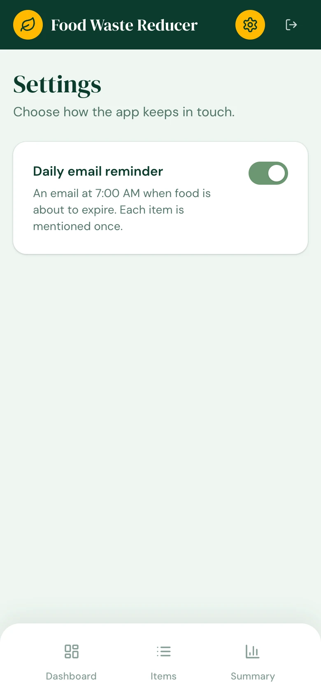
A focused set of features that follows each item from the day it is bought to the day it is used or thrown away.
Register and sign in with email and password. Each user sees only their own items.
Add, edit and delete items with category, quantity, unit and expiry date.
Items marked Expired Urgent Soon or Fresh, with the next seven days first.
Close an item as used or wasted in one tap.
An optional 7:00 AM email for items that expire within two days. Each item is listed once.
Used and wasted counts, waste rate and a breakdown by category for any month.
A three-tier web application. A React single-page app calls a Spring Boot REST API over HTTPS with a JWT token. The API stores data in PostgreSQL and sends reminder emails through Brevo. A GitHub Actions schedule triggers the daily reminder.
Three flows show how data moves through the system: adding an item, the daily reminder and the monthly summary.
POST /api/items is sent with the JWT token.POST /api/internal/reminders/run is sent with a secret header.GET /api/summary?month=YYYY-MM.Open-source tools with free hosting tiers.